Parsing error: Assigning to rvalue
Você escreveu um comando de atribuição (ou seja, um comando do tipo
x = 10;), mas o que está escrito à esquerda do sinal de
= não é o nome de uma variável (deveria ser).

É um interpretador de código javascript, ou seja, você escreve código e clica em "Executar" para vê-lo executar passo a passo. É possível avançar e retroceder na simulação.
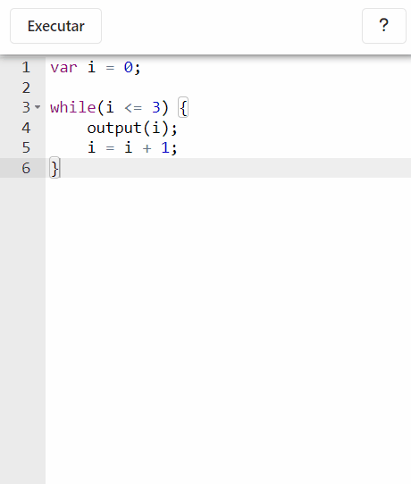
Avança um micro-passo na simulação. Por exemplo, num cálculo
aritmético como 2 + 3/5, ele passa individualmente
por cada etapa da conta
|
|
| Volta um micro-passo na simulação | |
Avança um macro-passo na simulação. Um macro-passo equivale a
vários micro-passos, geralmente significa que a simulação vai
avançar uma linha inteira de uma só vez. Por exemplo, num cálculo
aritmético como 2 + 3/5, ele pula toda a conta de uma
vez.
|
|
| Volta um macro-passo na simulação | |
| Avança a simulação continuamente até o fim (é possível pausar clicando de novo no mesmo botão) | |
| Volta ao editor de código |
O simulador aceita código em javascript versão ES5, com limitações (veja a seção "Limitações")
Existem no simulador 2 funções globais: input(), que
exibe uma janela para o usuário escrever um número, e
output(x), que imprime no console qualquer valor
x.
Não existem prompt, confirm,
alert ou console.
Este simulador só é possível porque existem o Python Tutor, que é um simulador de código de onde praticamente imitamos a lógica de renderização, e o interpretador JS-Interpreter, que usamos para traçar o passo a passo do código javascript no próprio navegador sem a necessidade de um servidor.
Mas esses não são os únicos softwares que precisamos creditar. Veja no nosso Github todos eles e suas licenças. Seguem mais alguns:
Jsplumb para as flechas de conexão (vetores e objetos). Ace Editor, o editor de código. D3, biblioteca também usada para o desenho da simulação. Diff-match-patch, para guardar os "snapshots" do simulador que permitem retroceder a simulação. ESLint, que analisa o código e mostra as mensagens de erro. JSFrame.js para a janelinha de console da simulação.
setTimeout,
setInterval, Promise, funções
async, etc.
with,
try/catch/finally, throw,
getter/setter e expressões regulares. É possível dar
suporte a elas, mas não eram necessárias para nosso objetivo inicial
(não implementamos por falta de tempo)
window, self, Function,
Object, constructor, Array,
String, Boolean, Number,
Date, RegExp, Error,
EvalError, RangeError,
ReferenceError, SyntaxError,
TypeError, URIError, Math,
JSON, eval, parseInt,
parseFloat, isNaN, isFinite,
escape, unescape, decodeURI,
decodeURIComponent, encodeURI,
encodeURIComponent
Ao programar, você vai se deparar com dois tipos de erro: erros de compilação e erros de execução.
Erros de compilação são os que
aparecem enquanto você está escrevendo o código, antes mesmo de começar a
executá-lo. Por exemplo se você digitar um comando que não é javascript
válido, como var minha idade = 10;. Nesse exemplo, o erro é
que o nome da variável não pode ter espaço, deveria ser algo como
minhaidade ou minha_idade ou
minhaIdade. Veja como esse erro aparece:
Já erros de execução não aparecem
enquanto você digita o código. Eles acontecem depois, durante a simulação,
quando algum passo encontra um problema e o programa dá um erro, que vai
aparecer como uma mensagem vermelha na janelinha de console do simulador.
Por exemplo se você tem uma variável x que deveria ser um
array, mas você esqueceu de inicializá-la e deu o comando
x.push(40);. Vai aparecer o seguinte:
O que a mensagem vermelha quer dizer é: a variável x vale
undefined porque não foi inicializada, aí não tem como usar o
comando push porque ele só é aplicável em arrays.
Não se preocupe se não entendeu esse exemplo, ele já é meio "avançado" (você só encontraria algo assim caso estivesse mexendo com arrays, que já não são a coisa mais básica de javascript). Mas note que o erro sempre vem dizendo a linha e a coluna onde houve o problema. No caso foi na linha 3, coluna 0 (o primeiro caractere da linha é 0, não 1, por isso que a coluna é 0)
Quando tiver um erro desses, pesquise na internet o que ele significa.
Para erros de compilação, segue abaixo uma lista (não-exaustiva) em ordem alfabética de erros possíveis e o que eles significam:
Você declarou uma variável dentro de um bloco (exemplo:
if, while, for, etc.) mas
depois tentou usá-la fora desse bloco. Declare todas as variáveis no
início que não terá esse problema.
Você tentou declarar de novo uma variável que já existia. Não repita nomes de variáveis.
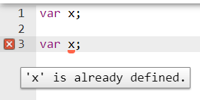Você tentou usar uma variável que não existe. Será que digitou errado o nome dela ?
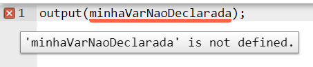Você tentou usar uma variável antes da linha onde ela é declarada. Declare primeiro, use depois.
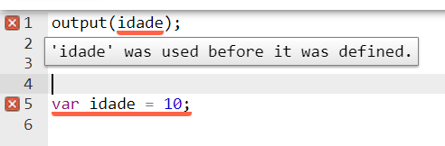Você declarou uma variável no meio do programa. Declara todas as variáveis no início.
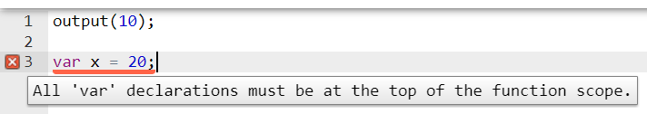
Você tentou usar == ou !=, mas nós exigimos
=== e !==.
Você usou a sintaxe with, a qual não é suportada.
Você escreveu um comando de atribuição (ou seja, um comando do tipo
x = 10;), mas o que está escrito à esquerda do sinal de
= não é o nome de uma variável (deveria ser).
Provavelmente você tentou definir o nome de uma variável começando com um número. Lembre-se das regras para nomes de variável:
_ ou $ ou uma letra (maiúscula
ou minúscula). Não pode começar com dígito
idade e
Idade são dois nomes diferentes
Provavelmente você criou uma variável com o mesmo nome de uma
palavra-chave da linguagem (como if, while,
etc.). Mude o nome da variável.
É um erro na escrita do código. "Token" significa
"caractere"/"palavra", ou seja, o comando que você escreveu não segue
totalmente as regras do javascript, então o computador não o entendeu.
No exemplo da imagem abaixo, queríamos criar uma variável
var x = 10; mas esquecemos de digitar o nome da variável,
daí o computador reclama que ele viu um sinal = onde
deveria aparecer o nome da variável.
Pode ser difícil achar a causa exata de um erro "Unexpected token",
porque muitos erros de digitação podem causá-lo. No
exemplo, foi a falta de uma palavra (x), mas poderia ser
falta de chaves (}), falta de ponto-e-vírgula
(;), falta de vírgula (,), e muitos outros
deslizes na hora de escrever o código.
Quando se deparar com um erros desses, conserte a indentação do seu
código para facilitar perceber erros de digitação, e consulte a
referência dos comandos que estiver usando (var,
if, while, etc.) para garantir que você está
usando a forma correta de escrevê-los.
Você abriu um comentário multi-linha (/* ... */) mas não
o fechou.
Você tentou atribuir um valor a um nome global (como se ele fosse uma
variável). Não use undefined, input,
output, NaN, etc. como nome de variável.
Você usou um get ou set num objeto. Essas
construções não são suportadas.
Você usou uma expressão regular. Expressões regulares não são suportadas.
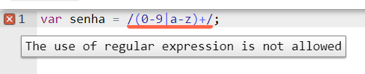Você usou throw. Essa construção não é suportada.
Você usou alguma das construções try /
catch / finally. Elas não são suportadas.
Você usou uma arrow function, que é um recurso do javascript ES6. Somente suportamos a versão ES5, transforme a arrow-function numa função normal.
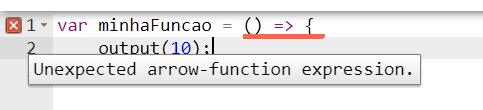
Você usou um comando de atribuição de variável (sinal de
=) como condição de um comando while. Talvez
você queria dizer === ?
Você usou um comando de atribuição de variável (sinal de
=) como condição de um comando if. Talvez
você queria dizer === ?
Pode ser também "Unexpected octal literal". Acontece quando você tenta usar um número na forma binária ou octal. Esses são recursos do javascript ES6. Somente suportamos a versão ES5, mude o número para o formato normal (decimal).
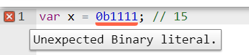
Você tentou atribuir a mais de uma variável de uma só vez. Faça
atribuições separadas, como x = 10; numa linha e
y = 10; na outra.
Você tentou criar uma classe (class), que é um recurso do
javascript ES6. Somente suportamos a versão ES5, use uma função
construtora em vez de uma classe.
Você tentou criar um array mas deixou um elemento em branco. Preencha todos os elementos com algum valor.
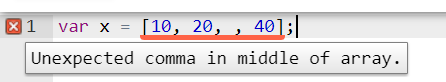
Você tentou criar um objeto com uma propriedade computada (i.e. o nome
da chave vem de uma variável). Esse é um recurso do javascript ES6,
mas somente suportamos a versão ES5. Substitua o nome computado por um
nome literal, por exemplo var obj = {idade: 10};.
Você definiu uma variável usando a palavra-chave const,
que é um recurso do javascript ES6. Somente suportamos a versão ES5,
mude para var.
Você usou desestruturação, que é um recurso do javascript ES6. Somente
suportamos a versão ES5, use acesso normal a propriedades, por exemplo
var idade = obj.idade;
Você usou a construção for(... of ...), que é um recurso
do javascript ES6. Somente suportamos a versão ES5, use outro tipo de
loop, como while, for normal, etc.
Você criou uma função geradora, que é um recurso do javascript ES6. Somente suportamos a versão ES5, use uma função normal.
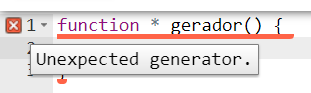Você tentou usar um recurso "obscuro" do javascript: label, que é uma marcação que serve para identificar um comando. Não suportamos essa construção, apague o label.
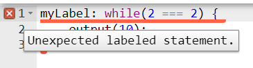
Você definiu uma variável usando a palavra-chave let, que
é um recurso do javascript ES6. Somente suportamos a versão ES5, mude
para var.
Você criou um objeto onde alguma propriedade foi atribuída de forma
abreviada, que é um recurso do javascript ES6. Somente suportamos a
versão ES5, use a atribuição usual, por exemplo
var obj = {idade: idade};
Você criou uma função onde algum dos argumentos tem um valor padrão.
Esse é um recurso do javascript ES6, mas somente suportamos a versão
ES5. Apague o valor padrão, use um if dentro da função,
por exemplo if (x === undefined) x = 10;
Você criou uma função com parâmetro rest, que é um recurso do javascript ES6. Somente suportamos a versão ES5, use parâmetros normais
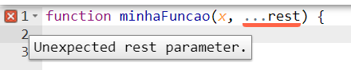
Você criou uma
template string, que é um recurso do javascript ES6. Somente suportamos a versão
ES5, use uma string normal, por exemplo
var mensagem = "Oi, eu tenho " + idade + " anos";
Você tentou usar um nome global que nós proibimos. Os seguintes nomes
não podem ser usados no programa: window,
self, Function, Object,
constructor, Array, String,
Boolean, Number, Date,
RegExp, Error, EvalError,
RangeError, ReferenceError,
SyntaxError, TypeError,
URIError, Math, JSON,
eval, parseInt, parseFloat,
isNaN, isFinite, escape,
unescape, decodeURI,
decodeURIComponent, encodeURI,
encodeURIComponent.
Você usou um recurso "obscuro" do javascript: uma
sequência, que é uma lista de comandos separados por
vírgula. Será que queria criar um array como
var x = [10, 20]; mas confundiu [ ] com
( ) ?
Você usou um ponto-e-vírgula ; que não era necessário,
por exemplo no final de um if ou while.
Apague esse ponto-e-vírgula.